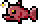

Angler Fish
| Drops | |
|---|---|
| Coins: | 5 |
| Item | Rate |
| | 0.2% |
| Angler Fish | |
|---|---|
|  | |
| Statistics | |
| Type | Fish Enemy |
| Environment | Water |
| AI Type | Swimming |
| Damage | 80 |
| Max Life | 90 |
| Defense | 22 |
The Angler Fish is a water enemy which spawns in caves and in jungle biome.
The Angler Fish swims faster than some other fish when chasing the player. It has a chance of inflicting the bleeding debuff when it attacks.
The Angler Fish have a small light bulb which emits a very small amount of light.
History
- 1.1: Introduced.
- Early mentions: Terraria 1.1 Trailer 25th November 2011